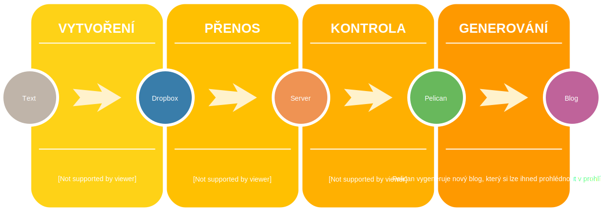

O blogu trochu technicky
Publikováno 6. 10. 2017 (13:43) v kategorii Software • Napsala Ivana Doležalová • Přečtete za 3 minuty
Co bych to byla za ajťáka, kdybych se s vámi nepodělila, jaké cool technologie pohání tento blog a jak snadné je ho díky nim psát. Pokud nejste zrovna od fochu, pak se nebojte, taky u toho neusnete.
Nejdůležitější požadavek pro psaní tohoto blogu byl ten, že se nechci zatěžovat žádným zbytečným formátováním a prát se s nějakým WYSIWYG editorem, které nesnáším. Moje ideální představa byla platformní nezávislost - chci mít možnost psát na notebooku, tabletu i mobilu. Taky se občas hodí mít možnost psát offline, ideálně přímo finální podobu textu včetně formátování. Důležitá je pro mne i možnost spolehlivého zálohování a to včetně rozepsaných a nepublikovaných textů.
Moje řešení
- Texty jsem se rozhodla psát v Markdownu. Má jednoduchou syntax, kterou navíc velice dobře znám, o formátování se za mě stará parser. Každý text je uložen v jednoduchém textovém souboru s příponou
*.md, který lze editovat v jakémkoliv textovém editoru. - Všechny texty jsou uložené v Dropboxu, čímž je vyřešeno zálohování i publikování. Pokud chci přidat nový text, vytvořím jej v příslušné dropboxové složce. Pokud jej chci editovat, upravím jej jako běžný textový soubor. Texty mám k dispozici kdekoliv, kde se mohu přihlásit na Dropbox a jsou vždy aktuální.
- Blog mi z Markdown souborů generuje Pelican. Jedná se o statické HTML stránky, takže na provoz webového serveru nejsou kladeny žádné extra nároky.
- Samotný web běží na virtuálním serveru. O jeho chod se starají tři démoni: Dropbox, wacther změněných souborů a webový server.
Samotná instalace nebyla nijak náročná, pokud někoho zajímá konkrétní technické řešení, může nahlédnout do mého repozitáře na GitHubu.
Ilustrace procesu
 Diagram generování blogu
Jak vypadá tento článek v Markdownu
Title: O blogu trochu technicky
Date: 2017-10-06 13:43
Category: Software
Tags: pelican, blog
Slug: o-blogu-trochu-technicky
Authors: Ivana Doležalová
Summary: Co bych to byla za ajťáka, kdybych se s vámi nepodělila, jaké cool technologie pohání tento blog a jak snadné je ho díky nim psát. Pokud nejste zrovna od fochu, pak se nebojte, taky u toho neusnete.
Nejdůležitější požadavek pro psaní tohoto blogu byl ten, že se nechci zatěžovat žádným zbytečným formátováním a prát se s nějakým [WYSIWYG editorem](https://cs.wikipedia.org/wiki/WYSIWYG), které nesnáším. Moje ideální představa byla platformní nezávislost - chci mít možnost psát na notebooku, tabletu i mobilu. Taky se občas hodí mít možnost psát offline, ideálně přímo finální podobu textu včetně formátování. Důležitá je pro mne i možnost spolehlivého zálohování a to včetně rozepsaných a nepublikovaných textů.
## Moje řešení
* __Texty__ jsem se rozhodla psát v [Markdownu](https://cs.wikipedia.org/wiki/Markdown). Má jednoduchou syntax, kterou navíc velice dobře znám, o formátování se za mě stará parser. Každý text je uložen v jednoduchém textovém souboru s příponou `*.md`, který lze editovat v jakémkoliv textovém editoru.
* Všechny texty jsou uložené v [Dropboxu](http://dropbox.com), čímž je vyřešeno __zálohování__ i __publikování__. Pokud chci přidat nový text, vytvořím jej v příslušné dropboxové složce. Pokud jej chci editovat, upravím jej jako běžný textový soubor. Texty mám k dispozici kdekoliv, kde se mohu přihlásit na Dropbox a jsou vždy aktuální.
* Blog mi z Markdown souborů __generuje__ [Pelican](http://docs.getpelican.com/en/stable). Jedná se o statické HTML stránky, takže na provoz webového serveru nejsou kladeny žádné extra nároky.
* Samotný __web běží__ na virtuálním serveru. O jeho chod se starají tři démoni: Dropbox, wacther změněných souborů a webový server.
Samotná instalace nebyla nijak náročná, pokud někoho zajímá konkrétní technické řešení, může nahlédnout do mého [repozitáře na GitHubu](https://github.com/akarienta/blog).
## Ilustrace procesu